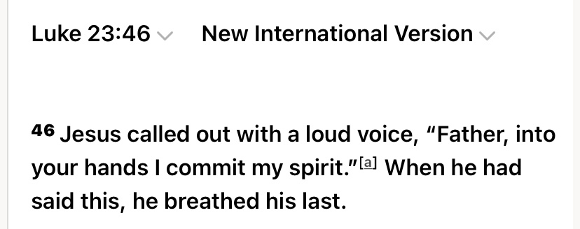

Many christians give examples on trying to prove the divinity of Jesus (pbuh). It has been a debated topic ever since the spread of christianity. Here there are 4 examples on how on how the authors of the bible try to manipulate the verses to try make people think that Jesus was some type of divine nature.
They also say the gospel authors were divinely inspired
lets look at the gospel of mark and matthew
Here you can see that they are both narrating the same speech of Jesus. Notice how it says (let the reader understand) in both the passages. This is an editorial comment. We clearly know this isn’t what Jesus said. Rather, it is what the author of the gospel who has written this to direct it at the reader. It is extremely unlikely that two writers would by pure chance, insert into their accounts exactly the same editorial comment in exactly the same place. The most simple and obvious explanation to this is that one of the writers was using the material of the other as a source and copied not only the bulk and source of Jesus, but also the same editorial comment.
This seriously casts doubts on the traditional understanding that matthew and mark were independent eyewitnesses to the life and ministry of Jesus as it appears that one of the authors were plagiarising the other.
Now christian apologists and missionaries may argue this is not an issue so long as the earlier source was inspired and so long as the later authors were faithful in copying the process, then all accounts will contain reliable information about Jesus.
Lets put their arguments to the test.
Here is 2 accounts of the same story in the different gospels
We can see that the gospels of matthew and mark both narrate a story about a woman who was miraculously healed by touching the cloak of Jesus. In Mark, is ignorant about who touched him, he had to consult the crowd in order to find out. Contrast this with Matthew who changed the story so that Jesus immediately knew who touched him. The author of matthew seems to portray Jesus in a more powerful light.
Here is another example of this.
We can see that the gospel of mark and luke both provide an account of Jesus and the disciples on a boat during a storm. Mark portrays the disciples as rather disrespectful towards Jesus, accusing him of being uncaring, even the response of Jesus, “Do you still have no faith?” is quite harsh. By comparison, Luke softened the tone considerably not only having the disciples address more respectfully, but also changing the response of Jesus to, “Where is your Faith?”.
Here is another incident about a man who questions Jesus.
In Mark, Jesus rejected the Question as praise of him being good, saying that God alone is good. Matthew seems to have been troubled by this and therefore Jesus’s answer very subtly from “why do you call me good” to “why do you ask me what is good?”. So as to avoid the difficult implication that Jesus is not completely good.
This is another example regarding the crucifixion of Jesus.

In Mark, Jesus is alleged to have cried out in blasphemous despair. Luke’s account completely reversed this by placing in the mouth of Jesus, the far more stoic and submissive statement, “Father into your hands, I commit my spirit.”
See how one was way more calmer than the other, it just shows that the texts have been manipulated to the authors liking to try depict Jesus in a more divine way.
If Jesus knew about the crucifixion, why was he saying blasphemous things by saying, “My God, My God, why have you forsaken me?
In summary, we have seen that the gospel authors failed to faithfully convey information about Jesus. They were less concerned with accuracy and more concerned with shaping the stories to conform with their own personal theological beliefs. With regards to the question of divine inspiration, it’s apparent that the authors themselves did not consider these accounts to be inspired otherwise they would not have tampered with them in such a way.